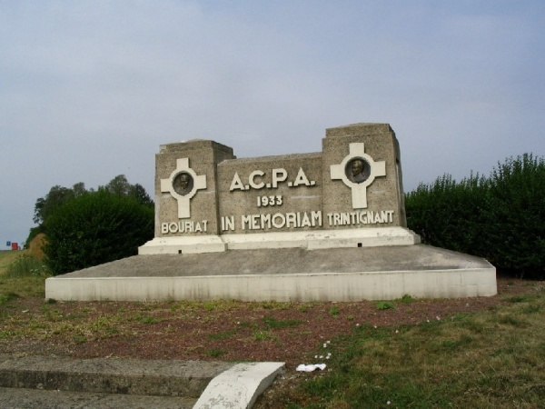

The Motorsport Memorial website
Motor Sport Monuments and Memorials - Péronne, France
 |
| This is the Péronne monument. It is built at the South-East corner of the track (virage de Mons), in the infield. In memory of Louis Trintignant and Guy Bouriat's fatal accidents in 1933. These accidents occured at the entry of Mesnil-Bruntel for Trintignant (crashing against a house wall on the right side during practice) and 2/3 of the North-South straight for Bouriat (against a tree on the left side while trying to overtake Etancelin during the race). |
The Motorsport Memorial website